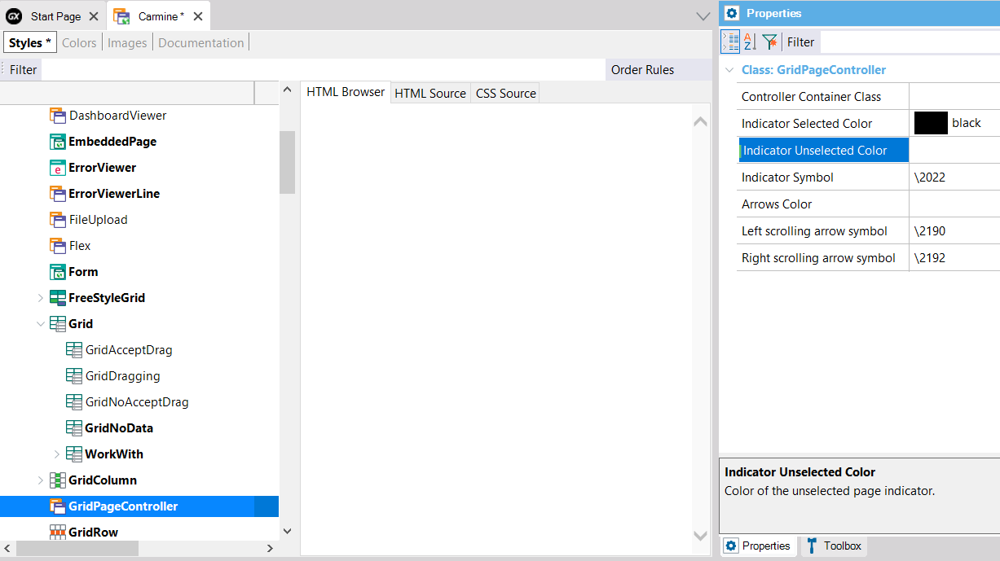

Sets the fill color used for the unselected page indicator. Scope Generators: Java, .NET, .NET Core Description
You can set this property for the GridPageController class of a Web Theme object:  Run-time/Design-timeThis property applies only at design-time. How to apply changes
See Also
Indicator Selected Color property (in GridPageController class of Web Theme) |
| Backlinks | |
| HowTo: Using Horizontal Grid control in Web applications | Indicator Selected Color property (in GridPageController class of Web Theme) |